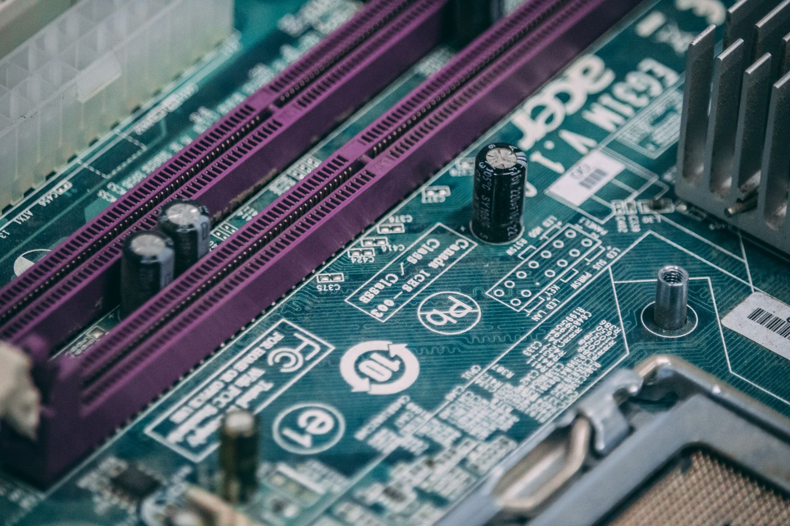

[속보] TSMC 구마모토 1공장, 지진 6일 만에 전면 복구 완료

기존 보도 이후 변경 사항: 지난 보도에서 구마모토 공장 가동 중단 및 공급망 집중 리스크를 다뤘으나, 이번에는 TSMC가 공식적으로 완전 복구 및 가동 재개를 발표한 새로운 진전을 전한다. TSMC는 4일 일본 구마모토현에 위치한 JASM(Japan Advanced Semiconductor Manufacturing) 공장이 완전히 복구됐다고 공식 발표했다.
이번 복구는 지진 발생 이후 불과 약 6일 만에 이뤄진 것으로, 반도체 생산 시설 특성상 정밀 장비와 클린룸 환경 재확립이 필요한 점을 고려하면 이례적으로 빠른 속도다. TSMC 측은 일본 정부와 지방자치단체, 현지 임직원, 공급망 파트너사들의 신속한 협력 덕분에 가능했다고 밝혔다.
TSMC는 가동 재개에 맞춰 지진 피해를 입은 구마모토 지역사회에 2억5000만 엔(약 22억7000만 원)을 기부한다고 밝혔다. 이는 지역과의 상생 및 사회적 책임 차원의 조치로, 구마모토 주민들의 신뢰를 공고히 하기 위한 전략적 행보로도 해석된다.
JASM은 TSMC가 일본 정부의 강력한 지원을 등에 업고 2024년 가동을 시작한 첨단 반도체 생산 거점이다. 22nm 및 28nm 공정을 주력으로 하며, 소니·덴소·도요타 등 일본 주요 고객사에 차량용 및 이미지센서 반도체를 공급하고 있다.
이번 지진은 구마모토 공장의 지리적 집중 리스크를 다시 한번 수면 위로 끌어올렸다. 반도체 공급망 전문가들은 '단일 지역에 핵심 생산시설이 밀집할 경우 천재지변 하나로 글로벌 공급이 흔들릴 수 있다'며 지리적 분산의 필요성을 재차 강조했다.
실제로 구마모토 공장 가동 중단 소식이 전해진 직후, 차량용 반도체 공급 우려로 일부 완성차 업체들의 주가가 일시 하락하는 등 시장이 민감하게 반응했다. 이는 TSMC 구마모토 거점이 글로벌 차량용 반도체 공급망에서 차지하는 비중이 그만큼 커졌음을 보여주는 사례다.
한국 소부장 업계에도 이번 사태는 중요한 시사점을 남겼다. 구마모토 공장이 일시적으로나마 멈추면서 관련 소재·부품 납품 일정에 차질이 빚어진 국내 협력사들이 다수 있었던 것으로 알려졌다. 이는 국내 소부장 기업들이 글로벌 생산 거점의 지리적 리스크에도 대응 전략을 마련해야 함을 시사한다.
TSMC는 현재 구마모토 1공장 외에도 2공장 건설을 추진 중이며, 더 나아가 3공장 설립 논의도 진행 중인 것으로 전해진다. 일본 정부는 반도체 국산화 및 공급망 내재화를 위해 TSMC 유치에 수조 엔대의 보조금을 지원하고 있다.
업계 전문가는 '이번 신속한 복구는 TSMC의 위기 대응 역량을 입증한 사례이지만, 근본적인 공급망 집중 리스크 해소를 위해서는 지역 분산 투자가 병행돼야 한다'고 조언했다. TSMC는 미국 애리조나, 독일 드레스덴 등 글로벌 분산 생산 전략을 이미 추진 중이다.
구마모토 공장 재가동으로 일본 내 차량용·산업용 반도체 공급 정상화가 빠르게 이뤄질 것으로 예상된다. 다만 지진 이후 클린룸 청정도 재확보 및 설비 재점검에 일정 시간이 소요되는 만큼, 완전한 생산 정상화까지는 다소 시간이 걸릴 수 있다는 분석도 나온다.
반도체 공급망 리스크 관리 측면에서, 이번 사태는 '단일 지역 의존'에서 벗어난 복수 생산 거점 확보 전략의 중요성을 다시금 부각시켰다. 글로벌 반도체 패권 경쟁이 격화되는 가운데, 생산 거점 다변화는 기술 경쟁력만큼이나 중요한 전략적 과제로 자리잡고 있다.